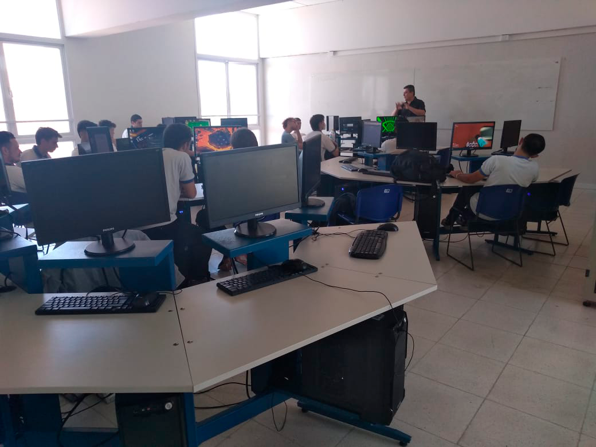

|  |
Demos es una plataforma de gestión educativa con un enfoque orientado en los alumnos y el uso de datos.
|
Utilizamos datos recolectados directamente de los alumnos.Relacionamos información de encuestas con datos duros para ofrecerle conclusiones lógicas a instituciones, profesores y estudiantes. |
Para darle un nuevo enfoque al sistema educativo, adaptandolo a necesidades actuales.De esta forma, tu institución se moderniza. Ahora tanto profesores como directivos pueden conocer las necesidades directas de sus estudiantes, y adaptar los métodos de enseñanza en base a las estadísticas. |